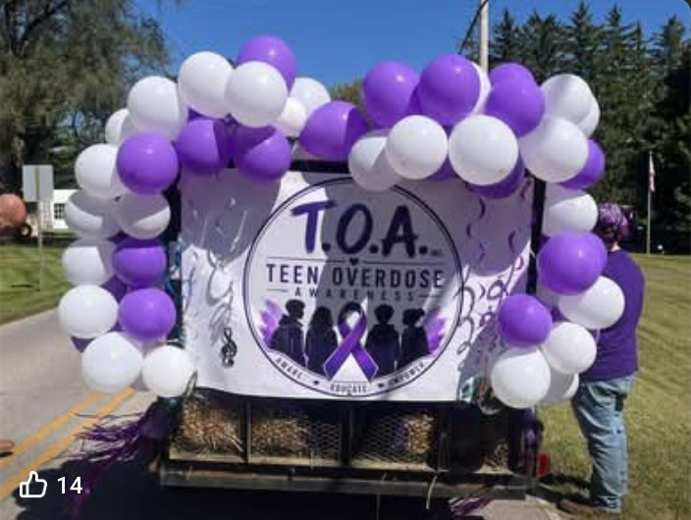
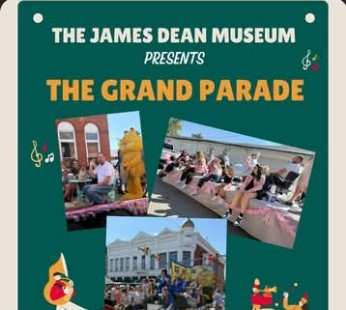

01
Truth without judgment
Clear, age-appropriate education helps young people make informed choices and ask for help sooner.
T.O.A. gives teens, families, and communities the knowledge to recognize risk, respond to overdose, and speak without shame.

Clear, age-appropriate education helps young people make informed choices and ask for help sooner.
Knowing overdose signs and how to respond gives families and bystanders the power to act fast.
Schools, families, local leaders, and young people can replace stigma with support and prevention.
Naloxone can reverse an opioid overdose and will not harm someone if opioids are not present.
Tell the dispatcher the person is unresponsive and may be overdosing.
Keep them awake and breathing if possible, place them on their side to prevent choking, and stay until help arrives.
Emergency guidance adapted from the CDC: What to Do If You Think Someone Is Overdosing.
T.O.A. takes prevention out of the shadows and into the places where young people and families already gather—schools, events, neighborhoods, and everyday conversations.
CDC guidance for recognizing an overdose and taking immediate action.
Free, confidential, 24/7 treatment referral: 1-800-662-HELP (4357).
Search for state-licensed substance use and mental health treatment providers.
24/7 judgment-free crisis support for mental health and substance-use concerns.

Public events create room for honest conversations, visible support, and prevention resources that reach families where they are.